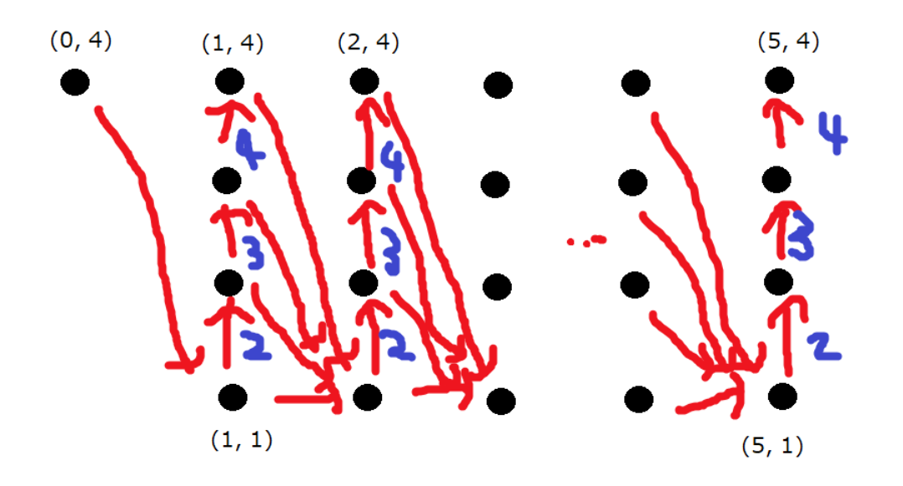
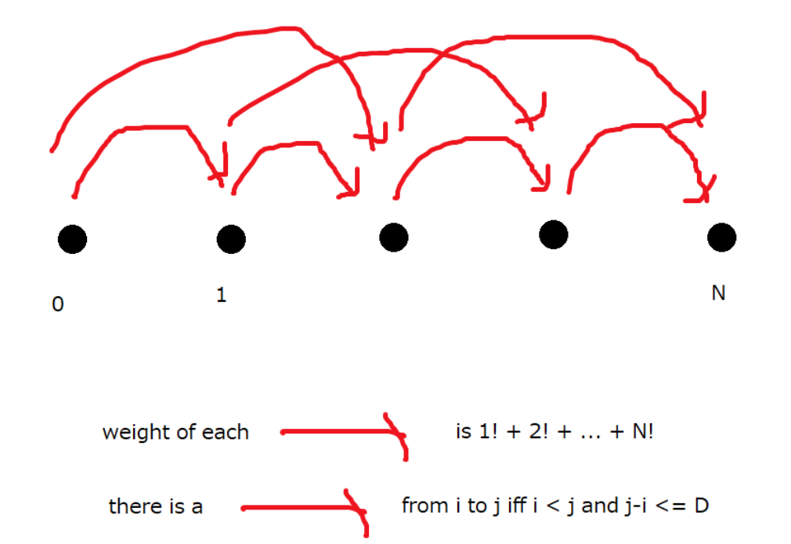

来的时候发现只有一个小时了.然而还是 头铁 开题,怒掉一波 $rating$ .
比赛链接.
官方题解.
A Ball Distribution
- 签到题.
1 |
|
B Picking Up
- 显然只需要枚举两个点,将它们的坐标差作为 $(p,q)$ 进行计算,其他的 $(p,q)$ 没有用.
- 然后用并查集或者记忆化搜索随便搞搞就可以了.
1 |
|
C Successive Subtraction
- 构造 + 贪心.
- 首先可以将 $0$ 全部减掉,于是只剩下正/负数.
- 特判只有正数与只有负数的情况,只有正数就让最小的那个数贡献为负,只有负数就让最大的那个数贡献为负.
- 否则,正负数都有的情况,答案一定是 $\sum |a_i|$ .
- 证明的话,考虑只有一个正数的情况,用它去减其他所有数即得 $\sum |a_i|$ .只有一个负数的情况,留下一个正数后,让那个负数减其他所有数,再让留下的正数减它,答案也是 $\sum |a_i|$ .
- 否则,正负数都至少有 $2$ 个.每次取出两个正数 $x,y$ ,一个负数 $z$ ,连续操作两次,先得到 $z-y$ ,再得到 $x-(z-y)=x+y-z$ . 这样操作后正负数都减少了 $1$ 个,并且每个数的贡献还是 $|a_i|$ ,一直操作,直到正数只有一个或负数只有一个时,执行对应情况的操作即可.
1 |
|
D Squirrel Merchant
- 贪心 + 背包.
- 显然到 $B$ 时可以先把先前在 $A$ 买的东西全部卖掉后再进行操作,不会使结果变劣.
- 于是就成了 $A$ 买 + $B$ 卖 与 $B$ 买 + $A$ 卖 两个过程.尝试最大化每一步的收益即可.
- 如 $A$ 买 + $B$ 卖 这个过程,就可以用 $g_A$ 的容量换取 $g_B-g_A$ 的收益.另外的两种同理.
- 做两次背包即可.时间复杂度 $O(N\cdot \max(g,s,b))$ .
注意开 $long\ long$ .
1 |
|
E Balanced Piles
- $dp$ .
- 先只考虑 $D=1$ 的情况.设 $f(i,j)$ 表示当前最大值为 $i$ ,最大值有 $j$ 个时,操作到最终状态的方案数.
- 预先给每块砖钦定一个两两不同的优先度,若可以操作多块砖,则优先操作优先度高的砖.
- 那么若 $i\not=H$ ,可以转移到 $f(i+1,1)$ ,若 $j\not=N$ ,可以转移到 $f(i,j+1)$ .新加入的那块砖插入到原来的 $j$ 块砖中,有 $j+1$ 种方案.所以 $f(i,j)=f(i+1,1)+(j+1)\cdot f(i,j+1)$ ( $i=H$ 或 $j=N$ 除外).
- 边界是 $f(H,N)=1$ ,答案是 $f(0,N)$ .钦定优先度会使方案数 $\times N!$ ,但我们转移时规定了顺序,即方案数是序列的方案数,所以又要 $/ N!$ ,两者就抵消掉了.
1 | int f[MAXN][MAXN]; |
- 观察转移形式 $f(i,j)=f(i+1,1)+(j+1)\cdot f(i,j+1)$ ,可发现答案 $f(0,N)$ 就对应了下面这个 $DAG$ 从 $(0,N)$ 到 $(H,N)$ 的路径条数.
边上的数字代表有几条重边 ,图中 $N=4,H=5$ .

经过 奥妙重重 的运算,答案 $f(0,N)=(\sum_{i=1}^N i!)^{H-1}\cdot N!$ .
再来考虑一般的 $D\geq 1$ 的情况.
- 考虑一个数列 $0=h_0<h_1<\dots <h_K=H$ ,满足 $\forall 0\leq i<K,h_{i+1}-h_i\leq D$ .那么现在要求每次操作的高度 $h$ 能依次构成上面形式的数列,答案就是 $(\sum_{i=1}^N i!)^{K-1}\cdot N!$ .
- 沿用 $D=1$ 时构造 $DAG$ 的思路,答案对应了下面的 $DAG$ 从 $0$ 到 $N$ 的路径数目.
$weight$ 其实就是说重边的数目.图片均来自官方题解.

- 维护 $f(i)$ 表示 $0\to i$ 的路径条数,并维护 $f$ 的前缀和,即可在 $O(n)$ 内解决此题.
1 |
|
F Diverta City
- 构造.
- 考虑数学归纳法,对于 $N=2$ 的情况,显然可以直接连一条长度 $1$ 的边完成构造.
- 否则,对于 $N\geq 3$ ,先构造一个 $N-1$ 个点的完全图满足要求,再加入第 $N$ 个点,则只需要考虑从第 $N$ 个点向前 $N-1$ 个点连边的长度.
- 令 $M$ 为先前构造出的 $N-1$ 个点的图中最长的哈密顿路径长度,令 $a=\lbrace 1,2,4,7,12,20,29,38,52\rbrace$ ,则第 $N$ 个点与第 $i$ 个点相连的边长度为 $(M+1)\cdot a_i$ 即可满足新得到的 $N$ 个点的图也符合要求.
- 为啥呢?因为任意一条新图的哈密顿路径中,只有 $1$ 条新加入的边( $N$ 为路径起点/终点) , 或 $2$ 条新加入的边( $N$ 不为路径起点/终点),而其余的边一定是 $N-1$ 个点的图中一条哈密顿路径的一部分.
- 所以新图中的每一条哈密顿路径长度都可以被表示为 $x+(M+1)\cdot a_i$ 或 $x+(M+1)\cdot(a_i+a_j)$ .
- 其中 $0\leq x\leq M$ .而我们构造的数列 $a$ 是满足所有 $a_i,a_i+a_j$ 都是互异的,所以新图的每条哈密顿路径长度也是互异的,于是得到的新图也满足条件.
- 当 $N=10$ 时,可以验证此时最长的边为 $96755758040<10^{11}$ 满足限制.每次加点后暴力枚举 $i!/2$ 条哈密顿路径,计算 $M$ .时间复杂度 $O((N+1)!)$ .
1 |
|